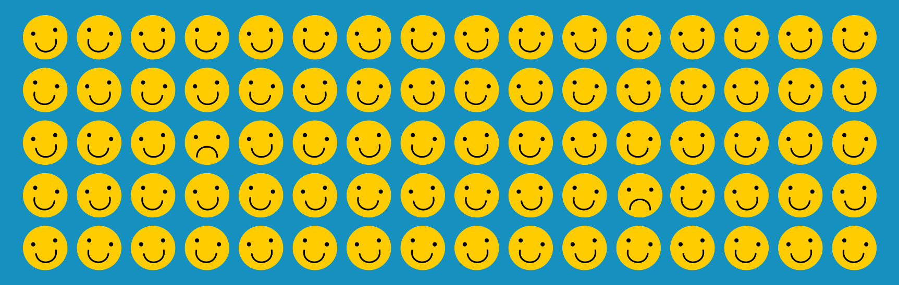

Physics of the everyday
The three familar states of matter have been studied for millenia, and while gases have been understood for centuries, and crystals for over a century, the liquid state has remained elusive. Yet it accounts most of the earth's surface.
It is only in the last few decades that an understanding of equilibrium lquids hase been achieved. And lquids are rarely in equilibrium.
We address major long-standing challenges in liquids and related systems such as colloids using an array of experimental and computational techniques. Surprisingly, strikingly similar phenomena occur across a vast range of lengthscales from molecules to mesoscopic colloids and even animals.
Backrgound: thanks to all those who made ‘‘Crystallisation and Self-Assembly: from Soft Matter to Pharmaceuticals to Biomineralisation’’ such a success. Link to workshop website.
Three longstanding challenges
Crystal nucleation. Crystallisation is a truly everyday phenomenon and the rate of nucleation has major implications in climate change modelling. Yet is it essentially impossible to predict the rate of nucleation a priori. One expects that model systems, like hard sphere colloids, would be an ideal test case but the prediction differs from experiments so much that that it has been termed ‘‘the second-largest discrepancy in physics’’. Our latest results.
The glass transition by which a liquid solidifies without freezing is a modern day Scientific Revolution in the sense of Thomas Kuhn. Our progress in bringing together theories believed to be mutually exclusive is summarised here .
Delayed gel collapse Gels form many everyday products from cosmetics to foods to agrichemicals, often to suppress flow. Colloidal gels become stronger over time, and then, remarkably they collapse under their own weight catastrophically after days or even years. We have developed an new imaging technique to reveal the mechanism of this mysterious phenomenon.